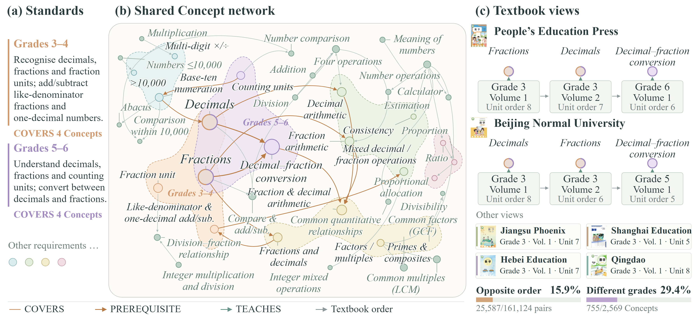
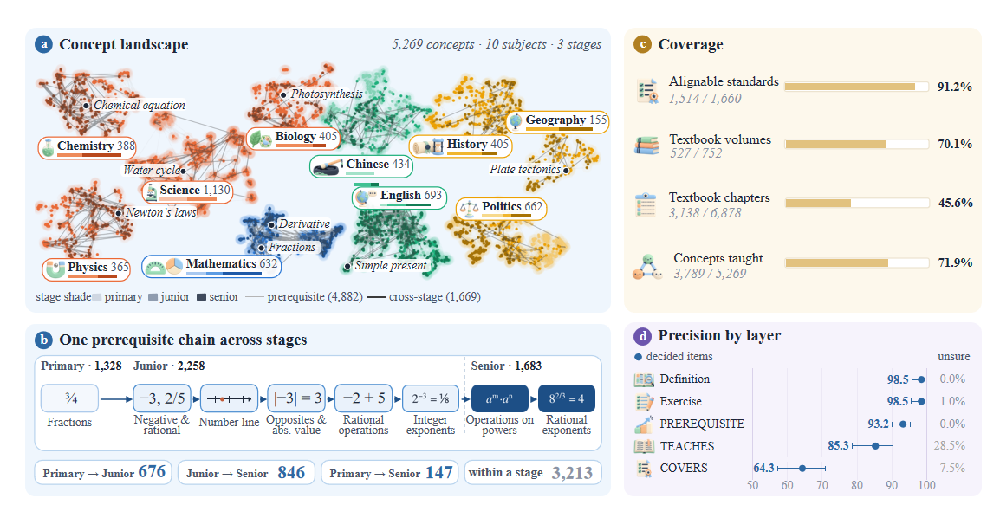

KNOWLEDGE IN CONTEXT
知识关系
拖动节点 · 滚轮缩放 · 点击探索
当前知识点前置后继所属主题实线 → 先修 · 虚线 → 从属
加载 EduGraph 公开数据与检索索引
EduGraph 将课程标准、知识点、先修关系、教材视图、讲解与习题组织在同一数据底座中，让教育应用可以检索知识、理解关联，并构建持续的教学流程。
课程要求连接共享 Concept；不同出版社保留独立的编排顺序。

涵盖十个学科，连接小学、初中与高中阶段的知识和教学资源。

页面中的关系来自公开数据。教材视图展示章节顺位及关联知识点，未包含原书章节标题与印刷编号。学习路径由先修关系生成；已掌握标记只保存在当前浏览器。
讲解、题目及映射保留原始审核状态，可在详情中查看。